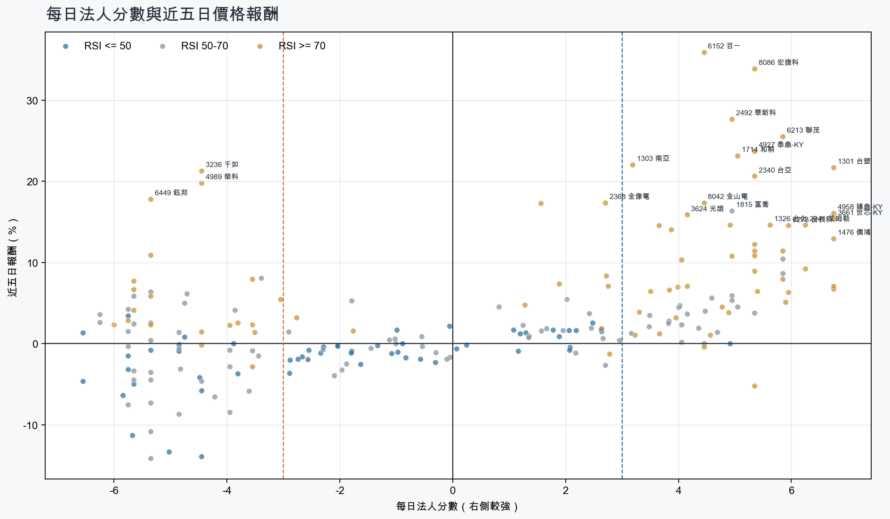
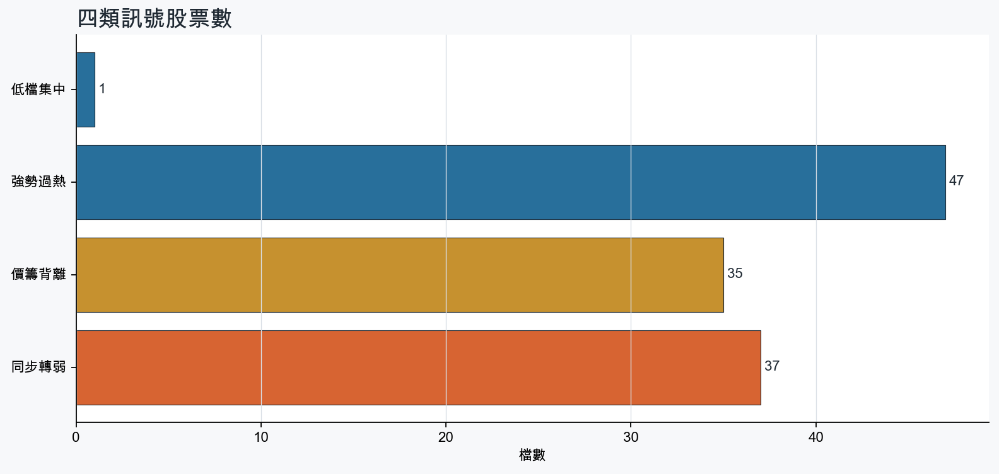
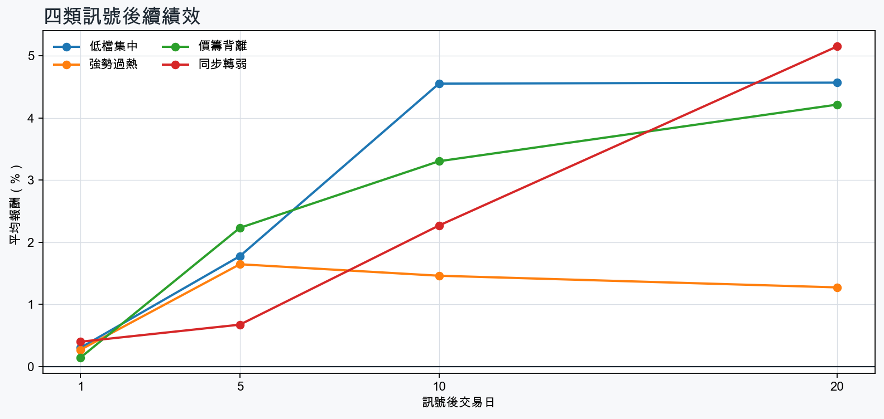

市場情緒中性分歧
近5日法人合計-748,875 張
篩選池上漲比例64.1%
籌碼好 / RSI低1 檔
籌碼差 / 價跌15 檔



EPS × PE VALUATION
法人常用的相對估值
顯示保守、基準與樂觀估值帶，不把單一數字包裝成精準目標價。
最新累計 EPS 依季數年化 × 同產業有效 P/E 的 Q25／中位數／Q75。排除本公司、非正 P/E，並以 1.5×IQR 排除離群值。估值帶是公開資料篩選值，不是法人目標價；未使用分析師預估 EPS。
MOOD × MONEY
情緒與籌碼雷達
熱度代表被討論程度；情緒分與法人方向分開計算。熱門不等於適合追價，樣本不足也不硬判多空。
| 股票 | 情緒 | 討論熱度 | 情緒 × 籌碼 | 情緒 × 基本面 |
|---|---|---|---|---|
| 3260 威剛同步轉弱 | 偏空 -33.3信心 75 | 1003 篇 / 171 留言 / 0 則新聞 | 情籌雙弱法人分 -6.5 | 基本面佳、情緒悲觀基本面分 +3.6 |
| 2303 聯電同步轉弱 | 情緒高漲 +49.2信心 100 | 952 篇 / 122 留言 / 3 則新聞 | 熱門但法人撤退法人分 -4.8 | 基本面與情緒共振基本面分 +3.6 |
| 4958 臻鼎-KY強勢過熱 | 情緒高漲 +78.1信心 78 | 802 篇 / 47 留言 / 2 則新聞 | 情籌共振法人分 +6.8 | 基本面與情緒共振基本面分 +3.0 |
| 3105 穩懋強勢過熱 | 中性分歧 -7.8信心 68 | 762 篇 / 37 留言 / 1 則新聞 | 高熱分歧法人分 +5.8 | 基本面與情緒分歧基本面分 +3.6 |
| 5351 鈺創價籌背離 | 偏多 +31.6信心 66 | 711 篇 / 25 留言 / 3 則新聞 | 熱門但法人撤退法人分 -4.8 | 基本面與情緒共振基本面分 +3.6 |
| 3189 景碩強勢過熱 | 偏多 +30.1信心 30 | 611 篇 / 17 留言 / 0 則新聞 | 情籌共振法人分 +5.4 | 基本面與情緒共振基本面分 +3.6 |
| 3264 欣銓價籌背離 | 偏多 +25.5信心 49 | 591 篇 / 9 留言 / 2 則新聞 | 熱門但法人撤退法人分 -5.8 | 基本面與情緒共振基本面分 +3.6 |
| 3605 宏致同步轉弱 | 偏多 +29.7信心 30 | 440 篇 / 0 留言 / 3 則新聞 | 熱門但法人撤退法人分 -4.0 | 基本面與情緒共振基本面分 +3.0 |
| 2354 鴻準同步轉弱 | 中性分歧 +0.0信心 30 | 440 篇 / 0 留言 / 3 則新聞 | 情籌混合法人分 -5.8 | 基本面與情緒分歧基本面分 +1.7 |
| 6244 茂迪同步轉弱 | 中性分歧 +0.0信心 30 | 440 篇 / 0 留言 / 3 則新聞 | 情籌混合法人分 -4.2 | 基本面與情緒分歧基本面分 +1.7 |
| 1727 中華化同步轉弱 | 偏多 +29.7信心 30 | 440 篇 / 0 留言 / 3 則新聞 | 熱門但法人撤退法人分 -5.3 | 基本面與情緒共振基本面分 +3.0 |
| 6449 鈺邦價籌背離 | 偏多 +29.7信心 30 | 440 篇 / 0 留言 / 3 則新聞 | 熱門但法人撤退法人分 -5.3 | 基本面與情緒共振基本面分 +3.6 |
01
籌碼好 / RSI低
優先研究基本面；法人續買且價格止穩時，才適合分批觀察。
| 股票 / 確認狀態 | 每日法人分 | 浦男式近似 | 法人加速度 | RSI / 相對強弱 | 量價確認 | 融資融券 | 每週集保確認 | 基本面 | EPS × 同業 P/E 估值 | 情緒 / 情籌 | 近期消息 | 論壇討論 |
|---|---|---|---|---|---|---|---|---|---|---|---|---|
| 3019 亞光等待確認 · 54 分籌碼有訊號，但價格尚未確認 | +4.9法人 +2,484 張 / 4 天 | 接近 · 58中期均線偏多；法人籌碼偏多；買超具延續性；留意未站月線、法人買盤未加速 | -1,860 張近3日 +542 / 連續 -1 日 | 48.3相對大盤 -5.8% | 量比 0.58確認分 -4.3收盤跌破20日線；近20日弱於大盤；成交量不足；法人買盤減速 | -%融資 - 張 / 融券 - 張 | -1.64 pp1000張 +0.11 pp | 單月營收年增 +15.3%；累計營收年增 +15.5%；2026 Q2 累計 EPS 2.98仍需觀察下一期財報延續性來源：公開資訊觀測站 | 基準 NT$ 153.7估值帶 77.78–229.4現價 137.0 · 估值帶內 · 距基準 +12.2%2026 Q2 累計 EPS 2.98 → 年化 5.96光電同業 P/E 13.05／25.79／38.49 · n=67 · 信心中等以 Q2 累計 EPS 年化，不等同分析師全年預估來源：TWSE／TPEx 每日本益比 | 樣本不足 +0.0熱度 0 / 信心 0情緒樣本不足 | 近期沒有通過股票語境篩選的新聞 | 近期沒有明確提及本股的論壇樣本 |
02
籌碼好 / RSI高
趨勢強但不追價，等待量縮、RSI降溫或回測支撐。
| 股票 / 確認狀態 | 每日法人分 | 浦男式近似 | 法人加速度 | RSI / 相對強弱 | 量價確認 | 融資融券 | 每週集保確認 | 基本面 | EPS × 同業 P/E 估值 | 情緒 / 情籌 | 近期消息 | 論壇討論 |
|---|---|---|---|---|---|---|---|---|---|---|---|---|
| 3624 光頡等待拉回 · 100 分等拉回，不追價 | +4.2法人 +12,009 張 / 3 天 | 命中 · 96站上月線；中期均線偏多；法人籌碼偏多；留意動能位置非最佳 | +14,728 張近3日 +13,842 / 連續 +2 日 | 76.0相對大盤 +76.5% | 量比 1.64確認分 +7.1價格、量能與籌碼未見明顯弱項 | -5.1%融資 -740 張 / 融券 +318 張 | +4.11 pp1000張 +8.67 pp | 單月營收年增 +65.8%；累計營收年增 +30.7%；2026 Q2 累計 EPS 1.86仍需觀察下一期財報延續性來源：公開資訊觀測站 | 基準 NT$ 103.8估值帶 68.67–177.8現價 175.0 · 估值帶內 · 距基準 -40.7%2026 Q2 累計 EPS 1.86 → 年化 3.72電子零組件同業 P/E 18.46／27.91／47.79 · n=148 · 信心中等以 Q2 累計 EPS 年化，不等同分析師全年預估來源：TWSE／TPEx 每日本益比 | 偏多 +29.7熱度 44 / 信心 30情籌共振 | 今日漲停股｜被動元件、化合物半導體與封測族群強勢領軍，台亞、光頡、宏捷科亮燈衝鋒1008｜豐雲學堂2026 年 10 月永豐金證券 · 10/09【光頡法說會重點內容備忘錄】未來展望趨勢 20261007富果直送 · 10/07 | 近期沒有明確提及本股的論壇樣本 |
| 8150 南茂等待拉回 · 100 分等拉回，不追價 | +5.0法人 +9,510 張 / 3 天 | 接近 · 85站上月線；中期均線偏多；法人籌碼偏多；留意量能尚未確認、RSI過熱 | +3,804 張近3日 +7,595 / 連續 +1 日 | 82.1相對大盤 +37.1% | 量比 0.67確認分 +5.8價格、量能與籌碼未見明顯弱項 | -%融資 - 張 / 融券 - 張 | +10.05 pp1000張 +8.82 pp | 單月營收年增 +33.3%；累計營收年增 +30.0%；2026 Q2 累計 EPS 2.00仍需觀察下一期財報延續性來源：公開資訊觀測站 | 基準 NT$ 111.2估值帶 73.60–211.3現價 128.0 · 估值帶內 · 距基準 -13.2%2026 Q2 累計 EPS 2.00 → 年化 4.00半導體同業 P/E 18.40／27.79／52.82 · n=150 · 信心中等以 Q2 累計 EPS 年化，不等同分析師全年預估來源：TWSE／TPEx 每日本益比 | 中性分歧 +0.0熱度 37 / 信心 20情籌混合 | 歐系外資調升南茂目標 SiPh 光學凸塊業務有望貢獻明年營收經濟日報 · 10/088150 南茂- 南茂115年9月營收27.92億、年增33.76% - 股市爆料同學會CMoney · 10/07 | 近期沒有明確提及本股的論壇樣本 |
| 6209 今國光等待拉回 · 100 分等拉回，不追價 | +5.3法人 +7,569 張 / 4 天 | 命中 · 89站上月線；中期均線偏多；法人籌碼偏多；留意法人買盤未加速、動能位置非最佳 | -477 張近3日 +4,097 / 連續 -1 日 | 71.5相對大盤 +11.6% | 量比 1.37確認分 +2.5法人買盤減速 | -%融資 - 張 / 融券 - 張 | +6.16 pp1000張 +4.95 pp | 單月營收年增 +106.8%；累計營收年增 +69.6%；2026 Q2 累計 EPS 1.53仍需觀察下一期財報延續性來源：公開資訊觀測站 | 基準 NT$ 76.90估值帶 39.93–115.9現價 90.10 · 估值帶內 · 距基準 -14.7%2026 Q2 累計 EPS 1.53 → 年化 3.06光電同業 P/E 13.05／25.13／37.88 · n=67 · 信心中等以 Q2 累計 EPS 年化，不等同分析師全年預估來源：TWSE／TPEx 每日本益比 | 樣本不足 +0.0熱度 0 / 信心 0情緒樣本不足 | 近期沒有通過股票語境篩選的新聞 | 近期沒有明確提及本股的論壇樣本 |
| 3105 穩懋等待拉回 · 97 分等拉回，不追價 | +5.8法人 +24,228 張 / 4 天 | 接近 · 79站上月線；中期均線偏多；法人籌碼偏多；留意法人買盤未加速、量能異常 | -14,087 張近3日 +5,178 / 連續 +2 日 | 73.3相對大盤 +26.9% | 量比 0.58確認分 +1.1成交量不足；法人買盤減速 | +1.3%融資 +588 張 / 融券 -110 張 | +9.15 pp1000張 +8.78 pp | 單月營收年增 +30.6%；累計營收年增 +33.0%；2026 Q2 累計 EPS 3.56仍需觀察下一期財報延續性來源：公開資訊觀測站 | 基準 NT$ 197.9估值帶 131.0–362.6現價 581.0 · 高於估值帶 · 距基準 -65.9%2026 Q2 累計 EPS 3.56 → 年化 7.12半導體同業 P/E 18.40／27.79／50.92 · n=150 · 信心中等以 Q2 累計 EPS 年化，不等同分析師全年預估來源：TWSE／TPEx 每日本益比 | 中性分歧 -7.8熱度 76 / 信心 68高熱分歧 | 穩懋9月營收年月雙增 Q3受惠光通訊出貨放大增長鉅亨網 · 10/05 | [情報] 穩懋 3105 9月營收PTT Stock · 10-05 · 30 留言[標的] 3105 穩懋 櫃買跟三竹買賣超不同PTT Stock · 10-08 · 7 留言 |
| 6257 矽格等待拉回 · 100 分等拉回，不追價 | +4.0法人 +6,847 張 / 2 天 | 接近 · 85站上月線；中期均線偏多；法人籌碼偏多；留意買超延續不足、RSI過熱 | +5,340 張近3日 +5,947 / 連續 -2 日 | 81.2相對大盤 +30.7% | 量比 1.48確認分 +6.5價格、量能與籌碼未見明顯弱項 | -%融資 - 張 / 融券 - 張 | +8.69 pp1000張 +8.12 pp | 單月營收年增 +28.6%；累計營收年增 +20.5%；2026 Q2 累計 EPS 4.65仍需觀察下一期財報延續性來源：公開資訊觀測站 | 基準 NT$ 258.4估值帶 171.1–491.2現價 283.0 · 估值帶內 · 距基準 -8.7%2026 Q2 累計 EPS 4.65 → 年化 9.30半導體同業 P/E 18.40／27.79／52.82 · n=150 · 信心中等以 Q2 累計 EPS 年化，不等同分析師全年預估來源：TWSE／TPEx 每日本益比 | 偏多 +29.7熱度 44 / 信心 30情籌共振 | 【矽格法說會重點內容備忘錄】未來展望趨勢 20261006富果直送 · 10/06矽格光通訊業務起飛 明年營收拚倍數成長自由財經 · 10/06 | 近期沒有明確提及本股的論壇樣本 |
| 6278 台表科等待拉回 · 100 分等拉回，不追價 | +6.0法人 +11,915 張 / 5 天 | 接近 · 85站上月線；中期均線偏多；法人籌碼偏多；留意量能尚未確認、RSI過熱 | +8,654 張近3日 +10,554 / 連續 +9 日 | 88.2相對大盤 +26.9% | 量比 2.61確認分 +5.8價格、量能與籌碼未見明顯弱項 | -%融資 - 張 / 融券 - 張 | +6.42 pp1000張 +4.90 pp | 單月營收年增 +10.9%；累計營收年增 +5.2%；2026 Q2 累計 EPS 4.932026 Q2 累計營益率 6.0%來源：公開資訊觀測站 | 基準 NT$ 254.3估值帶 128.7–379.5現價 248.0 · 估值帶內 · 距基準 +2.5%2026 Q2 累計 EPS 4.93 → 年化 9.86光電同業 P/E 13.05／25.79／38.49 · n=67 · 信心中等以 Q2 累計 EPS 年化，不等同分析師全年預估來源：TWSE／TPEx 每日本益比 | 樣本不足 +0.0熱度 26 / 信心 10情緒樣本不足 | 6278 台表科- Q3營收144.58億為Q2營收的109.3%，再創歷史新高- 股市爆料同學會CMoney · 10/09 | 近期沒有明確提及本股的論壇樣本 |
| 8086 宏捷科等待拉回 · 100 分等拉回，不追價 | +5.3法人 +4,329 張 / 4 天 | 接近 · 70站上月線；法人籌碼偏多；法人買盤加速；留意中期均線未翻多、量能異常 | +4,491 張近3日 +4,817 / 連續 +3 日 | 91.9相對大盤 +35.3% | 量比 5.07確認分 +5.320日線低於60日線 | +1.7%融資 +231 張 / 融券 +78 張 | +5.03 pp1000張 +6.99 pp | 單月營收年增 +12.6%；累計營收年增 +35.8%；2026 Q2 累計 EPS 2.93仍需觀察下一期財報延續性來源：公開資訊觀測站 | 基準 NT$ 162.8估值帶 107.8–309.5現價 154.0 · 估值帶內 · 距基準 +5.8%2026 Q2 累計 EPS 2.93 → 年化 5.86半導體同業 P/E 18.40／27.79／52.82 · n=150 · 信心中等以 Q2 累計 EPS 年化，不等同分析師全年預估來源：TWSE／TPEx 每日本益比 | 樣本不足 +0.0熱度 0 / 信心 0情緒樣本不足 | 近期沒有通過股票語境篩選的新聞 | 近期沒有明確提及本股的論壇樣本 |
| 3016 嘉晶等待拉回 · 98 分等拉回，不追價 | +6.2法人 +5,003 張 / 5 天 | 接近 · 73站上月線；中期均線偏多；法人籌碼偏多；留意法人買盤未加速、量能異常 | -469 張近3日 +2,857 / 連續 +6 日 | 84.0相對大盤 +76.1% | 量比 0.29確認分 +1.2成交量不足；法人買盤減速 | -%融資 - 張 / 融券 - 張 | +6.97 pp1000張 +7.79 pp | 單月營收年增 +57.8%；累計營收年增 +34.7%；2026 Q2 累計 EPS 1.00仍需觀察下一期財報延續性來源：公開資訊觀測站 | 基準 NT$ 55.90估值帶 36.82–104.5現價 183.5 · 高於估值帶 · 距基準 -69.5%2026 Q2 累計 EPS 1.00 → 年化 2.00半導體同業 P/E 18.41／27.95／52.24 · n=151 · 信心中等以 Q2 累計 EPS 年化，不等同分析師全年預估來源：TWSE／TPEx 每日本益比 | 樣本不足 +0.0熱度 0 / 信心 0情緒樣本不足 | 近期沒有通過股票語境篩選的新聞 | 近期沒有明確提及本股的論壇樣本 |
| 4958 臻鼎-KY等待拉回 · 100 分等拉回，不追價 | +6.8法人 +35,888 張 / 5 天 | 命中 · 89站上月線；中期均線偏多；法人籌碼偏多；留意法人買盤未加速、動能位置非最佳 | -16,025 張近3日 +9,895 / 連續 +5 日 | 76.3相對大盤 +12.5% | 量比 1.06確認分 +2.5法人買盤減速 | -%融資 - 張 / 融券 - 張 | +2.59 pp1000張 +2.20 pp | 單月營收年增 +41.1%；累計營收年增 +19.9%；2026 Q2 累計 EPS 3.552026 Q2 累計營益率 7.0%來源：公開資訊觀測站 | 基準 NT$ 198.2估值帶 131.1–339.3現價 592.0 · 高於估值帶 · 距基準 -66.5%2026 Q2 累計 EPS 3.55 → 年化 7.10電子零組件同業 P/E 18.46／27.91／47.79 · n=148 · 信心中等以 Q2 累計 EPS 年化，不等同分析師全年預估來源：TWSE／TPEx 每日本益比 | 情緒高漲 +78.1熱度 80 / 信心 78情籌共振 | 4958 臻鼎-KY - Q3營收646.24億為Q2營收的133.4%，再創歷史新高- 股市爆料同學會CMoney · 10/09欣興9月營收連6個月創高、前三季超越去年全年！臻鼎-KY 9月也締新猷| 產經非凡新聞台 · 10/09 | [情報] 4958 臻鼎-KY 9月營收PTT Stock · 10-08 · 42 留言[情報] 4958臻鼎-KY 9月營收PTT Stock · 10-08 · 5 留言 |
| 3189 景碩等待拉回 · 94 分等拉回，不追價 | +5.4法人 +4,672 張 / 4 天 | 接近 · 73站上月線；中期均線偏多；法人籌碼偏多；留意法人買盤未加速、量能異常 | -4,763 張近3日 +1,537 / 連續 +2 日 | 80.7相對大盤 +29.7% | 量比 0.39確認分 +1.1成交量不足；法人買盤減速 | -%融資 - 張 / 融券 - 張 | +4.25 pp1000張 +4.03 pp | 單月營收年增 +40.6%；累計營收年增 +32.1%；2026 Q2 累計 EPS 3.74仍需觀察下一期財報延續性來源：公開資訊觀測站 | 基準 NT$ 209.1估值帶 137.7–390.8現價 1,075 · 高於估值帶 · 距基準 -80.5%2026 Q2 累計 EPS 3.74 → 年化 7.48半導體同業 P/E 18.41／27.95／52.24 · n=151 · 信心中等以 Q2 累計 EPS 年化，不等同分析師全年預估來源：TWSE／TPEx 每日本益比 | 偏多 +30.1熱度 61 / 信心 30情籌共振 | 近期沒有通過股票語境篩選的新聞 | [新聞] BT板要等70周才有貨！南電、欣興、景碩.PTT Stock · 10-07 · 17 留言 |
| 2484 希華等待拉回 · 95 分等拉回，不追價 | +4.2法人 +5,390 張 / 3 天 | 命中 · 89站上月線；中期均線偏多；法人籌碼偏多；留意法人買盤未加速、動能位置非最佳 | -3,321 張近3日 +3,543 / 連續 +2 日 | 77.1相對大盤 +26.6% | 量比 2.40確認分 +2.5法人買盤減速 | -%融資 - 張 / 融券 - 張 | +8.72 pp1000張 +7.17 pp | 單月營收年增 +25.1%；累計營收年增 +1.7%；2026 Q2 累計 EPS 0.86仍需觀察下一期財報延續性來源：公開資訊觀測站 | 基準 NT$ 48.01估值帶 31.75–82.20現價 90.60 · 高於估值帶 · 距基準 -47.0%2026 Q2 累計 EPS 0.86 → 年化 1.72電子零組件同業 P/E 18.46／27.91／47.79 · n=148 · 信心中等以 Q2 累計 EPS 年化，不等同分析師全年預估來源：TWSE／TPEx 每日本益比 | 樣本不足 +0.0熱度 0 / 信心 0情緒樣本不足 | 近期沒有通過股票語境篩選的新聞 | 近期沒有明確提及本股的論壇樣本 |
| 5347 世界等待拉回 · 100 分等拉回，不追價 | +4.6法人 +12,745 張 / 4 天 | 接近 · 80站上月線；中期均線偏多；法人籌碼偏多；留意量能異常、RSI過熱 | +12,364 張近3日 +14,065 / 連續 +3 日 | 79.4相對大盤 +18.0% | 量比 0.56確認分 +5.8成交量不足 | -9.8%融資 -1,156 張 / 融券 -280 張 | +1.65 pp1000張 +1.58 pp | 單月營收年增 +40.5%；累計營收年增 +18.4%；2026 Q2 累計 EPS 2.84仍需觀察下一期財報延續性來源：公開資訊觀測站 | 基準 NT$ 157.8估值帶 104.5–300.0現價 186.5 · 估值帶內 · 距基準 -15.4%2026 Q2 累計 EPS 2.84 → 年化 5.68半導體同業 P/E 18.40／27.79／52.82 · n=150 · 信心中等以 Q2 累計 EPS 年化，不等同分析師全年預估來源：TWSE／TPEx 每日本益比 | 樣本不足 +0.0熱度 0 / 信心 0情緒樣本不足 | 近期沒有通過股票語境篩選的新聞 | 近期沒有明確提及本股的論壇樣本 |
| 1326 台化等待拉回 · 100 分等拉回，不追價 | +5.6法人 +55,199 張 / 4 天 | 命中 · 91站上月線；中期均線偏多；法人籌碼偏多；留意量能尚未確認、動能位置非最佳 | +23,833 張近3日 +34,230 / 連續 +3 日 | 76.3相對大盤 +5.2% | 量比 2.80確認分 +5.1價格、量能與籌碼未見明顯弱項 | -%融資 - 張 / 融券 - 張 | +0.48 pp1000張 +0.44 pp | 單月營收年增 +31.7%；累計營收年增 +16.0%；2026 Q2 累計 EPS 2.112026 Q2 累計營益率 3.0%來源：公開資訊觀測站 | 基準 NT$ 67.48估值帶 39.41–125.9現價 77.60 · 估值帶內 · 距基準 -13.0%2026 Q2 累計 EPS 2.11 → 年化 4.22塑膠工業同業 P/E 9.34／15.99／29.84 · n=9 · 信心中等以 Q2 累計 EPS 年化，不等同分析師全年預估來源：TWSE／TPEx 每日本益比 | 樣本不足 +0.0熱度 0 / 信心 0情緒樣本不足 | 近期沒有通過股票語境篩選的新聞 | 近期沒有明確提及本股的論壇樣本 |
| 1409 新纖等待拉回 · 100 分等拉回，不追價 | +6.8法人 +18,936 張 / 5 天 | 命中 · 87站上月線；中期均線偏多；法人籌碼偏多；留意動能位置非最佳 | +9,533 張近3日 +11,950 / 連續 +5 日 | 72.3相對大盤 +1.9% | 量比 1.00確認分 +5.0價格、量能與籌碼未見明顯弱項 | -%融資 - 張 / 融券 - 張 | +0.63 pp1000張 +0.45 pp | 累計營收年增 +12.0%；2026 Q2 累計 EPS 1.18單月營收年增 -8.6%來源：公開資訊觀測站 | 基準 NT$ 31.58估值帶 24.12–45.22現價 26.05 · 估值帶內 · 距基準 +21.2%2026 Q2 累計 EPS 1.18 → 年化 2.36紡織纖維同業 P/E 10.22／13.38／19.16 · n=34 · 信心中等以 Q2 累計 EPS 年化，不等同分析師全年預估來源：TWSE／TPEx 每日本益比 | 偏多 +29.7熱度 44 / 信心 30情籌共振 | 熱門股》切入半導體領域 新纖漲停自由時報 · 10/07〈台北紡織展〉新纖NEOLAST新產線正式量產 首階段年產能600噸鉅亨網 · 10/06 | 近期沒有明確提及本股的論壇樣本 |
| 2402 毅嘉等待拉回 · 100 分等拉回，不追價 | +3.8法人 +2,608 張 / 3 天 | 命中 · 96站上月線；中期均線偏多；法人籌碼偏多；留意動能位置非最佳 | +2,215 張近3日 +2,227 / 連續 -1 日 | 74.8相對大盤 +7.0% | 量比 1.50確認分 +6.3價格、量能與籌碼未見明顯弱項 | -%融資 - 張 / 融券 - 張 | +1.81 pp1000張 +1.42 pp | 單月營收年增 +16.4%；累計營收年增 +17.2%；2026 Q2 累計 EPS 0.462026 Q2 累計營益率 4.4%來源：公開資訊觀測站 | 基準 NT$ 25.68估值帶 16.98–45.80現價 61.00 · 高於估值帶 · 距基準 -57.9%2026 Q2 累計 EPS 0.46 → 年化 0.92電子零組件同業 P/E 18.46／27.91／49.78 · n=148 · 信心中等以 Q2 累計 EPS 年化，不等同分析師全年預估來源：TWSE／TPEx 每日本益比 | 樣本不足 +0.0熱度 26 / 信心 10情緒樣本不足 | 【12:57 即時新聞】毅嘉(2402)走強站上六字頭，光通訊動能成盤中焦點CMoney投資網誌 · 10/07 | 近期沒有明確提及本股的論壇樣本 |
03
籌碼差 / 股價上漲
可能是事件行情或軋空；沒有籌碼改善前避免追高。
| 股票 / 確認狀態 | 每日法人分 | 浦男式近似 | 法人加速度 | RSI / 相對強弱 | 量價確認 | 融資融券 | 每週集保確認 | 基本面 | EPS × 同業 P/E 估值 | 情緒 / 情籌 | 近期消息 | 論壇討論 |
|---|---|---|---|---|---|---|---|---|---|---|---|---|
| 6449 鈺邦風險警示 · 39 分背離警戒，避免追高 | -5.3法人 -3,742 張 / 1 天 | 未命中 · 51站上月線；明顯強於大盤；基本面有支撐；留意中期均線未翻多、法人籌碼偏弱 | -3,192 張近3日 -3,391 / 連續 -3 日 | 77.3相對大盤 +15.8% | 量比 4.38確認分 +1.420日線低於60日線；法人買盤減速 | -%融資 - 張 / 融券 - 張 | -3.28 pp1000張 -1.87 pp | 單月營收年增 +21.2%；累計營收年增 +23.8%；2026 Q2 累計 EPS 4.42仍需觀察下一期財報延續性來源：公開資訊觀測站 | 基準 NT$ 246.7估值帶 163.2–440.1現價 271.0 · 估值帶內 · 距基準 -9.0%2026 Q2 累計 EPS 4.42 → 年化 8.84電子零組件同業 P/E 18.46／27.91／49.78 · n=148 · 信心中等以 Q2 累計 EPS 年化，不等同分析師全年預估來源：TWSE／TPEx 每日本益比 | 偏多 +29.7熱度 44 / 信心 30熱門但法人撤退 | 【11:44 即時新聞】鈺邦(6449)股價續強，AI伺服器被動元件題材成盤中焦點CMoney投資網誌 · 10/08【09:51 即時新聞】鈺邦(6449) 盤中大漲近一成，AI伺服器訂單與營收成長受關注CMoney投資網誌 · 10/07 | 近期沒有明確提及本股的論壇樣本 |
| 3236 千如風險警示 · 75 分背離警戒，避免追高 | -4.5法人 -1,961 張 / 2 天 | 接近 · 62站上月線；中期均線偏多；法人買盤加速；留意法人籌碼偏弱、買超延續不足 | +736 張近3日 +137 / 連續 +1 日 | 88.4相對大盤 +30.9% | 量比 3.25確認分 +6.0價格、量能與籌碼未見明顯弱項 | -2.8%融資 -115 張 / 融券 +28 張 | +3.57 pp1000張 +3.02 pp | 單月營收年增 +19.4%；累計營收年增 +21.1%；2026 Q2 累計 EPS 0.202026 Q2 累計營益率 4.5%來源：公開資訊觀測站 | 基準 NT$ 11.16估值帶 7.38–19.12現價 58.90 · 高於估值帶 · 距基準 -81.0%2026 Q2 累計 EPS 0.20 → 年化 0.40電子零組件同業 P/E 18.46／27.91／47.79 · n=148 · 信心中等以 Q2 累計 EPS 年化，不等同分析師全年預估來源：TWSE／TPEx 每日本益比 | 中性分歧 +0.0熱度 44 / 信心 30情籌混合 | 盤中速報 - 千如(3236)股價拉至漲停，漲停價57.8元，成交5,979張TradingView · 10/07【10:40 即時新聞】千如(3236)股價走強，盤中買盤延續成焦點CMoney投資網誌 · 10/08 | 近期沒有明確提及本股的論壇樣本 |
| 4989 榮科風險警示 · 44 分背離警戒，避免追高 | -4.5法人 -2,657 張 / 2 天 | 未命中 · 36站上月線；明顯強於大盤；流動性足夠；留意中期均線未翻多、法人籌碼偏弱 | -7,759 張近3日 -5,257 / 連續 -1 日 | 75.8相對大盤 +16.7% | 量比 3.41確認分 +1.420日線低於60日線；法人買盤減速 | -%融資 - 張 / 融券 - 張 | +2.81 pp1000張 +2.87 pp | 單月營收年增 +101.8%；累計營收年增 +73.0%2026 Q2 累計 EPS -0.67；2026 Q2 累計營益率 -5.1%來源：公開資訊觀測站 | 不適用年化 EPS 非正數，不適合使用本益比估值 | 偏空 -29.7熱度 44 / 信心 30情籌雙弱 | 【10:29 即時新聞】榮科(4989) 盤中走強收復70元關卡，注意股題材成焦點CMoney投資網誌 · 10/07【10:37 即時新聞】榮科(4989)亮燈漲停，短線買盤回流成盤中焦點-CMoney 研究員CMoney投資網誌 · 10/05 | 近期沒有明確提及本股的論壇樣本 |
| 5452 佶優風險警示 · 48 分背離警戒，避免追高 | -5.3法人 -1,884 張 / 1 天 | 接近 · 62站上月線；中期均線偏多；明顯強於大盤；留意法人籌碼偏弱、法人買盤未加速 | -1,265 張近3日 -1,585 / 連續 -4 日 | 73.0相對大盤 +10.9% | 量比 1.68確認分 +3.1法人買盤減速；流動性偏低 | -2.9%融資 -123 張 / 融券 +2 張 | -0.09 pp1000張 +0.16 pp | 單月營收年增 +13.9%；2026 Q2 累計 EPS 0.39累計營收年增 -2.0%；2026 Q2 累計營益率 5.1%來源：公開資訊觀測站 | 基準 NT$ 18.41估值帶 12.21–28.63現價 30.45 · 高於估值帶 · 距基準 -39.5%2026 Q2 累計 EPS 0.39 → 年化 0.78其他電子同業 P/E 15.66／23.60／36.70 · n=67 · 信心中等以 Q2 累計 EPS 年化，不等同分析師全年預估來源：TWSE／TPEx 每日本益比 | 樣本不足 +0.0熱度 26 / 信心 10情緒樣本不足 | 【12:27 即時新聞】佶優(5452)勁揚逾7% 放量主力買盤成盤中焦點CMoney · 10/05 | 近期沒有明確提及本股的論壇樣本 |
| 2472 立隆電風險警示 · 44 分背離警戒，避免追高 | -5.7法人 -3,536 張 / 1 天 | 接近 · 61站上月線；明顯強於大盤；量價健康；留意中期均線未翻多、法人籌碼偏弱 | -338 張近3日 -2,043 / 連續 -2 日 | 77.5相對大盤 +8.3% | 量比 2.17確認分 +2.520日線低於60日線；法人買盤減速 | -%融資 - 張 / 融券 - 張 | -2.21 pp1000張 -3.29 pp | 單月營收年增 +51.2%；累計營收年增 +24.4%；2026 Q2 累計 EPS 3.98仍需觀察下一期財報延續性來源：公開資訊觀測站 | 基準 NT$ 224.2估值帶 146.9–396.2現價 243.5 · 估值帶內 · 距基準 -7.9%2026 Q2 累計 EPS 3.98 → 年化 7.96電子零組件同業 P/E 18.46／28.17／49.78 · n=148 · 信心中等以 Q2 累計 EPS 年化，不等同分析師全年預估來源：TWSE／TPEx 每日本益比 | 偏多 +29.7熱度 44 / 信心 30熱門但法人撤退 | 熱門股－立隆電 營收創高法人買中時新聞網 · 10/08營收速報 - 立隆電(2472)9月營收13.39億元年增率高達39.51％｜新聞快訊｜豐雲學堂永豐金證券 · 10/06 | 近期沒有明確提及本股的論壇樣本 |
| 3234 光環風險警示 · 21 分背離警戒，避免追高 | -5.3法人 -4,004 張 / 1 天 | 未命中 · 45站上月線；中期均線偏多；量價健康；留意法人籌碼偏弱、法人買盤未加速 | -91 張近3日 -2,070 / 連續 -1 日 | 54.2相對大盤 -11.8% | 量比 1.39確認分 -0.4近20日弱於大盤；法人買盤減速 | -%融資 +0 張 / 融券 +0 張 | -2.24 pp1000張 -3.39 pp | 單月營收年增 +110.1%；累計營收年增 +26.9%2026 Q2 累計 EPS -0.48；2026 Q2 累計營益率 -15.0%來源：公開資訊觀測站 | 不適用年化 EPS 非正數，不適合使用本益比估值 | 偏多 +29.7熱度 44 / 信心 30熱門但法人撤退 | 光環營收／9月1.21億元創新高 客戶訂單需求持續增溫UDN · 10/07【11:02 即時新聞】光環(3234)盤中走強逼近8% 上攻聚焦光通訊題材CMoney投資網誌 · 10/07 | 近期沒有明確提及本股的論壇樣本 |
| 3264 欣銓風險警示 · 63 分背離警戒，避免追高 | -5.8法人 -12,727 張 / 0 天 | 接近 · 82站上月線；中期均線偏多；法人買盤加速；留意法人籌碼偏弱、買超延續不足 | +12,573 張近3日 -2,447 / 連續 -8 日 | 63.1相對大盤 +9.1% | 量比 1.02確認分 +7.1價格、量能與籌碼未見明顯弱項 | -6.4%融資 -855 張 / 融券 +17 張 | -7.40 pp1000張 -8.08 pp | 單月營收年增 +46.6%；累計營收年增 +33.9%；2026 Q2 累計 EPS 4.39仍需觀察下一期財報延續性來源：公開資訊觀測站 | 基準 NT$ 244.0估值帶 161.6–463.8現價 256.0 · 估值帶內 · 距基準 -4.7%2026 Q2 累計 EPS 4.39 → 年化 8.78半導體同業 P/E 18.40／27.79／52.82 · n=150 · 信心中等以 Q2 累計 EPS 年化，不等同分析師全年預估來源：TWSE／TPEx 每日本益比 | 偏多 +25.5熱度 59 / 信心 49熱門但法人撤退 | 3264 欣銓 - 矽格漲停 加油啊 - 股市爆料同學會CMoney · 10/06衝刺5萬點只剩最後4％！欣銓、廣達被主力盯上了？「拉積盤變身超級吞金獸」法說會前夕3大族群突被買爆- 上市櫃旺得富理財網 · 10/05 | [情報] 3264欣銓 9月營收PTT Stock · 10-07 · 9 留言 |
| 4551 智伸科風險警示 · 66 分背離警戒，避免追高 | -5.7法人 -3,526 張 / 1 天 | 接近 · 68站上月線；法人買盤加速；明顯強於大盤；留意中期均線未翻多、法人籌碼偏弱 | +1,814 張近3日 -1,025 / 連續 -1 日 | 72.8相對大盤 +8.2% | 量比 0.97確認分 +6.520日線低於60日線 | -%融資 - 張 / 融券 - 張 | -1.75 pp1000張 -1.44 pp | 單月營收年增 +33.5%；累計營收年增 +21.1%；2026 Q2 累計 EPS 4.77仍需觀察下一期財報延續性來源：公開資訊觀測站 | 基準 NT$ 132.0估值帶 108.1–171.8現價 184.0 · 高於估值帶 · 距基準 -28.2%2026 Q2 累計 EPS 4.77 → 年化 9.54汽車工業同業 P/E 11.33／13.84／18.01 · n=27 · 信心中等以 Q2 累計 EPS 年化，不等同分析師全年預估來源：TWSE／TPEx 每日本益比 | 偏空 -19.8熱度 37 / 信心 20情籌混合 | 《一週外資賣超45-8》韓國50(3538)、智伸科(3538)富聯網 · 10/09【智伸科法說會重點內容備忘錄】未來展望趨勢 20260812富果直送 · 08/12 | 近期沒有明確提及本股的論壇樣本 |
| 8039 台虹風險警示 · 42 分背離警戒，避免追高 | -5.7法人 -6,307 張 / 1 天 | 未命中 · 51站上月線；中期均線偏多；法人買盤加速；留意法人籌碼偏弱、買超延續不足 | +4,029 張近3日 -2,308 / 連續 -1 日 | 61.2相對大盤 -0.9% | 量比 2.72確認分 +3.5價格、量能與籌碼未見明顯弱項 | -%融資 - 張 / 融券 - 張 | -1.50 pp1000張 -1.61 pp | 2026 Q2 累計 EPS 1.56單月營收年增 -13.8%；累計營收年增 -0.9%；2026 Q2 累計營益率 6.2%來源：公開資訊觀測站 | 基準 NT$ 87.08估值帶 57.60–149.1現價 305.5 · 高於估值帶 · 距基準 -71.5%2026 Q2 累計 EPS 1.56 → 年化 3.12電子零組件同業 P/E 18.46／27.91／47.79 · n=148 · 信心中等以 Q2 累計 EPS 年化，不等同分析師全年預估來源：TWSE／TPEx 每日本益比 | 中性分歧 +0.0熱度 44 / 信心 30情籌混合 | 8039 台虹- 高檔大量換手＋短線資金高度活躍。 - 股市爆料同學會CMoney · 10/09法人看好台虹明年EPS年增率逾55%台灣好新聞 · 10/07 | 近期沒有明確提及本股的論壇樣本 |
| 5351 鈺創風險警示 · 48 分背離警戒，避免追高 | -4.8法人 -5,735 張 / 2 天 | 接近 · 67站上月線；中期均線偏多；法人買盤加速；留意法人籌碼偏弱、買超延續不足 | +939 張近3日 -2,861 / 連續 -2 日 | 63.4相對大盤 -6.4% | 量比 1.40確認分 +2.9近20日弱於大盤 | -0.0%融資 -5 張 / 融券 +8 張 | -3.74 pp1000張 -4.34 pp | 單月營收年增 +525.3%；累計營收年增 +488.9%；2026 Q2 累計 EPS 6.69仍需觀察下一期財報延續性來源：公開資訊觀測站 | 基準 NT$ 374.4估值帶 246.7–706.7現價 115.0 · 低於估值帶 · 距基準 +225.5%2026 Q2 累計 EPS 6.69 → 年化 13.38半導體同業 P/E 18.44／27.98／52.82 · n=150 · 信心較低以 Q2 累計 EPS 年化，不等同分析師全年預估；年化 EPS 為交易所近四季 EPS 的 2.07 倍，需保守解讀來源：TWSE／TPEx 每日本益比 | 偏多 +31.6熱度 71 / 信心 66熱門但法人撤退 | 5351 鈺創- 9月營收不錯，股價紋風不動，何時才會再漲? - 股市爆料同學會CMoney · 10/095351 鈺創- 當今市場不缺記憶體嗎？ - 股市爆料同學會CMoney · 10/08 | [情報] 鈺創 115年9月營收24.07億、年增500.29%PTT Stock · 10-06 · 25 留言 |
| 8210 勤誠風險警示 · 4 分背離警戒，避免追高 | -5.8法人 -2,750 張 / 0 天 | 未命中 · 40量價健康；基本面有支撐；動能強但未過熱；留意未站月線、中期均線未翻多 | -534 張近3日 -1,838 / 連續 -10 日 | 47.5相對大盤 -8.3% | 量比 0.93確認分 -5.0收盤跌破20日線；20日線低於60日線；近20日弱於大盤；法人買盤減速 | -%融資 - 張 / 融券 - 張 | -5.57 pp1000張 -3.00 pp | 單月營收年增 +40.5%；累計營收年增 +51.7%；2026 Q2 累計 EPS 21.83仍需觀察下一期財報延續性來源：公開資訊觀測站 | 基準 NT$ 723.5估值帶 541.0–1,041現價 874.0 · 估值帶內 · 距基準 -17.2%2026 Q2 累計 EPS 21.83 → 年化 43.66電腦及週邊同業 P/E 12.39／16.57／23.85 · n=77 · 信心中等以 Q2 累計 EPS 年化，不等同分析師全年預估來源：TWSE／TPEx 每日本益比 | 偏多 +29.7熱度 44 / 信心 30熱門但法人撤退 | 勤誠9月營收月增0.8%TechNews 科技新報 · 10/088210 勤誠- 台積電傳赴德州設廠勤誠能搭上投資潮？ - 股市爆料同學會CMoney · 10/07 | 近期沒有明確提及本股的論壇樣本 |
| 3048 益登風險警示 · 50 分背離警戒，避免追高 | -3.5法人 -3,002 張 / 3 天 | 未命中 · 50站上月線；買超具延續性；明顯強於大盤；留意中期均線未翻多、法人籌碼偏弱 | -221 張近3日 -1,668 / 連續 -1 日 | 81.7相對大盤 +4.9% | 量比 6.74確認分 +1.620日線低於60日線；法人買盤減速 | -%融資 - 張 / 融券 - 張 | -1.27 pp1000張 -0.66 pp | 單月營收年增 +50.3%；累計營收年增 +36.3%；2026 Q2 累計 EPS 3.152026 Q2 累計營益率 2.3%來源：公開資訊觀測站 | 基準 NT$ 78.75估值帶 65.27–145.2現價 57.00 · 低於估值帶 · 距基準 +38.2%2026 Q2 累計 EPS 3.15 → 年化 6.30電子通路同業 P/E 10.36／12.50／23.05 · n=31 · 信心中等以 Q2 累計 EPS 年化，不等同分析師全年預估來源：TWSE／TPEx 每日本益比 | 偏多 +29.7熱度 44 / 信心 30熱門但法人撤退 | 益登業績創新高 帶動股價強漲UDN · 10/08營收速報 - 益登(3048)9月營收150.89億元年增率高達41.88％｜新聞快訊｜豐雲學堂永豐金證券 · 10/07 | 近期沒有明確提及本股的論壇樣本 |
| 6548 長科*風險警示 · 60 分背離警戒，避免追高 | -3.4法人 -4,136 張 / 1 天 | 接近 · 75站上月線；中期均線偏多；明顯強於大盤；留意法人籌碼偏弱、法人買盤未加速 | -131 張近3日 -2,532 / 連續 -4 日 | 65.2相對大盤 +4.8% | 量比 0.91確認分 +2.9法人買盤減速；融資單日增幅偏高 | +8.6%融資 +663 張 / 融券 -37 張 | +0.01 pp1000張 +0.14 pp | 單月營收年增 +43.7%；累計營收年增 +28.3%；2026 Q2 累計 EPS 1.22仍需觀察下一期財報延續性來源：公開資訊觀測站 | 基準 NT$ 67.81估值帶 44.90–128.9現價 77.30 · 估值帶內 · 距基準 -12.3%2026 Q2 累計 EPS 1.22 → 年化 2.44半導體同業 P/E 18.40／27.79／52.82 · n=150 · 信心中等以 Q2 累計 EPS 年化，不等同分析師全年預估來源：TWSE／TPEx 每日本益比 | 樣本不足 +9.9熱度 26 / 信心 10情緒樣本不足 | 長科*9月/Q3營收創高，獲利同步成長可期- 新聞MoneyDJ理財網 · 10/07 | 近期沒有明確提及本股的論壇樣本 |
| 3450 聯鈞風險警示 · 3 分背離警戒，避免追高 | -6.5法人 -4,234 張 / 0 天 | 未命中 · 36中期均線偏多；基本面有支撐；流動性足夠；留意未站月線、法人籌碼偏弱 | -2,341 張近3日 -3,905 / 連續 -10 日 | 43.9相對大盤 -5.6% | 量比 0.58確認分 -4.3收盤跌破20日線；近20日弱於大盤；成交量不足；法人買盤減速 | -%融資 - 張 / 融券 - 張 | -6.83 pp1000張 -8.99 pp | 單月營收年增 +109.8%；累計營收年增 +29.4%；2026 Q2 累計 EPS 2.78仍需觀察下一期財報延續性來源：公開資訊觀測站 | 基準 NT$ 154.5估值帶 102.3–283.1現價 522.0 · 高於估值帶 · 距基準 -70.4%2026 Q2 累計 EPS 2.78 → 年化 5.56半導體同業 P/E 18.40／27.79／50.92 · n=150 · 信心中等以 Q2 累計 EPS 年化，不等同分析師全年預估來源：TWSE／TPEx 每日本益比 | 偏多 +29.7熱度 44 / 信心 30熱門但法人撤退 | 聯鈞董事會核准資本支出預算調整為全數用於購置115及116年度新增產能所需台視全球資訊網 · 10/08聯鈞自結8月獲利年增2.5倍 搭上光通訊商機有望爆發鉅亨網 · 10/06 | 近期沒有明確提及本股的論壇樣本 |
| 6994 富威電力風險警示 · 18 分背離警戒，避免追高 | -6.2法人 -1,929 張 / 0 天 | 未命中 · 32站上月線；法人買盤加速；動能強但未過熱；留意中期均線未翻多、法人籌碼偏弱 | +429 張近3日 -608 / 連續 -5 日 | 64.2相對大盤 -18.9% | 量比 0.51確認分 -0.320日線低於60日線；近20日弱於大盤；成交量不足 | -%融資 - 張 / 融券 - 張 | -2.50 pp1000張 -1.25 pp | 累計營收年增 +50.0%單月營收年增 -24.8%；2026 Q2 累計 EPS -0.09；2026 Q2 累計營益率 4.6%來源：公開資訊觀測站 | 不適用年化 EPS 非正數，不適合使用本益比估值 | 樣本不足 +0.0熱度 0 / 信心 0情緒樣本不足 | 近期沒有通過股票語境篩選的新聞 | 近期沒有明確提及本股的論壇樣本 |
04
籌碼差 / 股價下跌
籌碼與價格同弱，原則上迴避，等待法人與大戶同時回補。
| 股票 / 確認狀態 | 每日法人分 | 浦男式近似 | 法人加速度 | RSI / 相對強弱 | 量價確認 | 融資融券 | 每週集保確認 | 基本面 | EPS × 同業 P/E 估值 | 情緒 / 情籌 | 近期消息 | 論壇討論 |
|---|---|---|---|---|---|---|---|---|---|---|---|---|
| 5314 世紀*風險警示 · 14 分迴避，等待籌碼翻正 | -5.7法人 -11,863 張 / 0 天 | 未命中 · 43中期均線偏多；法人買盤加速；基本面有支撐；留意未站月線、法人籌碼偏弱 | +103 張近3日 -6,164 / 連續 -6 日 | 40.1相對大盤 -34.5% | 量比 0.44確認分 -2.7收盤跌破20日線；近20日弱於大盤；成交量不足 | +3.6%融資 +594 張 / 融券 -141 張 | -7.64 pp1000張 -7.38 pp | 單月營收年增 +102.5%；累計營收年增 +151.4%；2026 Q2 累計 EPS 0.66仍需觀察下一期財報延續性來源：公開資訊觀測站 | 基準 NT$ 18.78估值帶 13.61–31.60現價 27.15 · 估值帶內 · 距基準 -30.8%2026 Q2 累計 EPS 0.66 → 年化 1.32其他同業 P/E 10.31／14.23／23.94 · n=70 · 信心較低以 Q2 累計 EPS 年化，不等同分析師全年預估；年化 EPS 為交易所近四季 EPS 的 0.28 倍，需保守解讀來源：TWSE／TPEx 每日本益比 | 樣本不足 +0.0熱度 0 / 信心 0情緒樣本不足 | 近期沒有通過股票語境篩選的新聞 | 近期沒有明確提及本股的論壇樣本 |
| 2614 東森風險警示 · 1 分迴避，等待籌碼翻正 | -4.5法人 -4,864 張 / 2 天 | 未命中 · 18留意未站月線、中期均線未翻多 | -6,483 張近3日 -5,461 / 連續 -3 日 | 37.6相對大盤 -13.3% | 量比 0.71確認分 -5.8收盤跌破20日線；20日線低於60日線；近20日弱於大盤；法人買盤減速；流動性偏低 | -%融資 - 張 / 融券 - 張 | -2.02 pp1000張 -1.78 pp | 2026 Q2 累計 EPS 0.83單月營收年增 -6.4%；累計營收年增 -3.7%；2026 Q2 累計營益率 6.5%來源：公開資訊觀測站 | 基準 NT$ 23.62估值帶 17.11–39.74現價 15.35 · 低於估值帶 · 距基準 +53.9%2026 Q2 累計 EPS 0.83 → 年化 1.66其他同業 P/E 10.31／14.23／23.94 · n=70 · 信心中等以 Q2 累計 EPS 年化，不等同分析師全年預估來源：TWSE／TPEx 每日本益比 | 樣本不足 +0.0熱度 0 / 信心 0情緒樣本不足 | 近期沒有通過股票語境篩選的新聞 | 近期沒有明確提及本股的論壇樣本 |
| 2601 益航風險警示 · 0 分迴避，等待籌碼翻正 | -5.0法人 -4,799 張 / 0 天 | 未命中 · 0留意未站月線、中期均線未翻多 | -1,792 張近3日 -3,296 / 連續 -4 日 | 9.9相對大盤 -29.4% | 量比 0.63確認分 -6.3收盤跌破20日線；20日線低於60日線；近20日弱於大盤；成交量不足；法人買盤減速；流動性偏低 | -%融資 - 張 / 融券 - 張 | -2.28 pp1000張 -2.45 pp | 2026 Q2 累計營益率 16.9%單月營收年增 -59.1%；累計營收年增 -55.3%；2026 Q2 累計 EPS -0.20來源：公開資訊觀測站 | 不適用年化 EPS 非正數，不適合使用本益比估值 | 樣本不足 +0.0熱度 0 / 信心 0情緒樣本不足 | 近期沒有通過股票語境篩選的新聞 | 近期沒有明確提及本股的論壇樣本 |
| 6218 豪勉風險警示 · 34 分迴避，等待籌碼翻正 | -5.3法人 -1,849 張 / 1 天 | 接近 · 65中期均線偏多；明顯強於大盤；量價健康；留意未站月線、法人籌碼偏弱 | -1,225 張近3日 -1,509 / 連續 -2 日 | 52.2相對大盤 +15.2% | 量比 1.07確認分 +0.5收盤跌破20日線；法人買盤減速 | +0.8%融資 +22 張 / 融券 +20 張 | -4.39 pp1000張 -1.78 pp | 單月營收年增 +52.9%；累計營收年增 +17.2%；2026 Q2 累計 EPS 2.412026 Q2 累計營益率 6.6%來源：公開資訊觀測站 | 基準 NT$ 108.9估值帶 74.76–191.8現價 56.00 · 低於估值帶 · 距基準 +94.4%2026 Q2 累計 EPS 2.41 → 年化 4.82通信網路同業 P/E 15.51／22.59／39.79 · n=58 · 信心較低以 Q2 累計 EPS 年化，不等同分析師全年預估；年化 EPS 為交易所近四季 EPS 的 2.87 倍，需保守解讀來源：TWSE／TPEx 每日本益比 | 樣本不足 +0.0熱度 26 / 信心 10情緒樣本不足 | 【12:13 即時新聞】豪勉(6218)盤中走強，通信網路與半導體設備題材受關注CMoney投資網誌 · 10/07 | 近期沒有明確提及本股的論壇樣本 |
| 6226 光鼎風險警示 · 54 分迴避，等待籌碼翻正 | -5.8法人 -14,230 張 / 0 天 | 接近 · 78站上月線；中期均線偏多；法人買盤加速；留意法人籌碼偏弱、買超延續不足 | +12,229 張近3日 -1,248 / 連續 -7 日 | 59.8相對大盤 +45.3% | 量比 0.98確認分 +6.5價格、量能與籌碼未見明顯弱項 | -%融資 - 張 / 融券 - 張 | -13.02 pp1000張 -7.40 pp | 單月營收年增 +13.1%；累計營收年增 +7.1%；2026 Q2 累計 EPS 0.032026 Q2 累計營益率 -4.1%來源：公開資訊觀測站 | 基準 NT$ 1.53估值帶 0.79–2.29現價 44.40 · 高於估值帶 · 距基準 -96.6%2026 Q2 累計 EPS 0.03 → 年化 0.06光電同業 P/E 13.18／25.46／38.23 · n=68 · 信心較低以 Q2 累計 EPS 年化，不等同分析師全年預估；交易所無有效本益比，無法交叉檢核近四季 EPS來源：TWSE／TPEx 每日本益比 | 樣本不足 +0.0熱度 0 / 信心 0情緒樣本不足 | 近期沒有通過股票語境篩選的新聞 | 近期沒有明確提及本股的論壇樣本 |
| 3490 單井風險警示 · 35 分迴避，等待籌碼翻正 | -5.3法人 -4,823 張 / 1 天 | 未命中 · 46站上月線；中期均線偏多；法人買盤加速；留意法人籌碼偏弱、買超延續不足 | +3,435 張近3日 -14 / 連續 -1 日 | 51.1相對大盤 -0.7% | 量比 0.27確認分 +3.0成交量不足 | -2.0%融資 -113 張 / 融券 -2 張 | -8.68 pp1000張 -4.89 pp | 累計營收年增 +6.4%；2026 Q2 累計 EPS 6.15單月營收年增 -5.3%；2026 Q2 累計營益率 -25.9%來源：公開資訊觀測站 | 基準 NT$ 317.2估值帶 164.9–473.4現價 45.20 · 低於估值帶 · 距基準 +601.8%2026 Q2 累計 EPS 6.15 → 年化 12.30光電同業 P/E 13.41／25.79／38.49 · n=67 · 信心中等以 Q2 累計 EPS 年化，不等同分析師全年預估來源：TWSE／TPEx 每日本益比 | 樣本不足 +0.0熱度 0 / 信心 0情緒樣本不足 | 近期沒有通過股票語境篩選的新聞 | 近期沒有明確提及本股的論壇樣本 |
| 6168 宏齊風險警示 · 49 分迴避，等待籌碼翻正 | -5.3法人 -4,022 張 / 1 天 | 接近 · 66站上月線；中期均線偏多；明顯強於大盤；留意法人籌碼偏弱、法人買盤未加速 | -453 張近3日 -1,478 / 連續 -4 日 | 64.0相對大盤 +36.6% | 量比 0.70確認分 +1.8法人買盤減速 | -%融資 - 張 / 融券 - 張 | +11.75 pp1000張 +11.92 pp | 單月營收年增 +18.5%；累計營收年增 +9.3%；2026 Q2 累計 EPS 0.172026 Q2 累計營益率 -0.4%來源：公開資訊觀測站 | 基準 NT$ 8.66估值帶 4.48–13.00現價 40.35 · 高於估值帶 · 距基準 -78.5%2026 Q2 累計 EPS 0.17 → 年化 0.34光電同業 P/E 13.18／25.46／38.23 · n=68 · 信心中等以 Q2 累計 EPS 年化，不等同分析師全年預估來源：TWSE／TPEx 每日本益比 | 樣本不足 +0.0熱度 0 / 信心 0情緒樣本不足 | 近期沒有通過股票語境篩選的新聞 | 近期沒有明確提及本股的論壇樣本 |
| 3006 晶豪科風險警示 · 4 分迴避，等待籌碼翻正 | -5.7法人 -5,640 張 / 1 天 | 未命中 · 36中期均線偏多；基本面有支撐；流動性足夠；留意未站月線、法人籌碼偏弱 | -4,768 張近3日 -6,400 / 連續 -4 日 | 40.3相對大盤 -15.2% | 量比 0.60確認分 -4.8收盤跌破20日線；近20日弱於大盤；成交量不足；法人買盤減速 | -%融資 - 張 / 融券 - 張 | -6.85 pp1000張 -6.88 pp | 單月營收年增 +605.2%；累計營收年增 +324.4%；2026 Q2 累計 EPS 27.58仍需觀察下一期財報延續性來源：公開資訊觀測站 | 基準 NT$ 1,543估值帶 1,017–2,914現價 267.0 · 低於估值帶 · 距基準 +478.0%2026 Q2 累計 EPS 27.58 → 年化 55.16半導體同業 P/E 18.44／27.98／52.82 · n=150 · 信心中等以 Q2 累計 EPS 年化，不等同分析師全年預估來源：TWSE／TPEx 每日本益比 | 樣本不足 +0.0熱度 0 / 信心 0情緒樣本不足 | 近期沒有通過股票語境篩選的新聞 | 近期沒有明確提及本股的論壇樣本 |
| 2303 聯電風險警示 · 27 分迴避，等待籌碼翻正 | -4.8法人 -213,042 張 / 1 天 | 未命中 · 50中期均線偏多；相對大盤偏強；基本面有支撐；留意未站月線、法人籌碼偏弱 | -20,662 張近3日 -102,315 / 連續 -4 日 | 55.7相對大盤 +3.0% | 量比 0.47確認分 -2.1收盤跌破20日線；成交量不足；法人買盤減速 | -%融資 - 張 / 融券 - 張 | -0.67 pp1000張 -0.62 pp | 單月營收年增 +30.7%；累計營收年增 +14.7%；2026 Q2 累計 EPS 4.68仍需觀察下一期財報延續性來源：公開資訊觀測站 | 基準 NT$ 261.9估值帶 172.2–494.4現價 147.5 · 低於估值帶 · 距基準 +77.5%2026 Q2 累計 EPS 4.68 → 年化 9.36半導體同業 P/E 18.40／27.98／52.82 · n=150 · 信心中等以 Q2 累計 EPS 年化，不等同分析師全年預估來源：TWSE／TPEx 每日本益比 | 情緒高漲 +49.2熱度 95 / 信心 100熱門但法人撤退 | 聯電9月營收飆史高！國家隊斥資6.7億狂掃晶圓代工「這2檔」 另砸2.7億挺友達登買超王Yahoo股市 · 10/08大換血？記憶體、聯電集體掉隊「蔡明彰驚曝高檔換股關鍵」衝刺5萬點天險全靠這5檔 - 上市櫃旺得富理財網 · 10/06 | [情報] 2303 聯電 9月營收 Mom:1.22%Yoy:27.22%PTT Stock · 10-06 · 92 留言[新聞] 聯電股價慘崩9％怎麼了 18億美元ECB的股PTT Stock · 10-06 · 30 留言 |
| 3260 威剛風險警示 · 0 分迴避，等待籌碼翻正 | -6.5法人 -9,322 張 / 0 天 | 未命中 · 25基本面有支撐；流動性足夠；留意未站月線、中期均線未翻多 | -5,116 張近3日 -7,253 / 連續 -10 日 | 13.0相對大盤 -17.1% | 量比 0.88確認分 -5.8收盤跌破20日線；20日線低於60日線；近20日弱於大盤；法人買盤減速 | +1.7%融資 +331 張 / 融券 +16 張 | -4.32 pp1000張 -3.39 pp | 單月營收年增 +279.8%；累計營收年增 +218.1%；2026 Q2 累計 EPS 62.46仍需觀察下一期財報延續性來源：公開資訊觀測站 | 基準 NT$ 3,495估值帶 2,304–6,598現價 362.5 · 低於估值帶 · 距基準 +864.2%2026 Q2 累計 EPS 62.46 → 年化 124.9半導體同業 P/E 18.44／27.98／52.82 · n=150 · 信心中等以 Q2 累計 EPS 年化，不等同分析師全年預估來源：TWSE／TPEx 每日本益比 | 偏空 -33.3熱度 100 / 信心 75情籌雙弱 | 近期沒有通過股票語境篩選的新聞 | [情報] 3260威剛9月營收 mom-16.8% yoy+199.9%PTT Stock · 10-06 · 137 留言[標的] 威剛3260 沒用的模組廠 放空放空空空PTT Stock · 10-07 · 31 留言 |
| 2464 盟立風險警示 · 22 分迴避，等待籌碼翻正 | -5.7法人 -4,858 張 / 1 天 | 未命中 · 47中期均線偏多；法人買盤加速；基本面有支撐；留意未站月線、法人籌碼偏弱 | +4,132 張近3日 -26 / 連續 -1 日 | 52.9相對大盤 -8.5% | 量比 0.52確認分 -0.8收盤跌破20日線；近20日弱於大盤；成交量不足 | -%融資 - 張 / 融券 - 張 | -6.33 pp1000張 -7.64 pp | 單月營收年增 +73.7%；累計營收年增 +31.4%；2026 Q2 累計 EPS 0.662026 Q2 累計營益率 4.4%來源：公開資訊觀測站 | 基準 NT$ 31.26估值帶 20.67–48.93現價 187.0 · 高於估值帶 · 距基準 -83.3%2026 Q2 累計 EPS 0.66 → 年化 1.32其他電子同業 P/E 15.66／23.68／37.07 · n=68 · 信心較低以 Q2 累計 EPS 年化，不等同分析師全年預估；年化 EPS 為交易所近四季 EPS 的 3.47 倍，需保守解讀來源：TWSE／TPEx 每日本益比 | 樣本不足 +0.0熱度 0 / 信心 0情緒樣本不足 | 近期沒有通過股票語境篩選的新聞 | 近期沒有明確提及本股的論壇樣本 |
| 3605 宏致風險警示 · 47 分迴避，等待籌碼翻正 | -4.0法人 -2,756 張 / 2 天 | 接近 · 65站上月線；中期均線偏多；明顯強於大盤；留意法人籌碼偏弱、法人買盤未加速 | -5,515 張近3日 -3,964 / 連續 -3 日 | 63.2相對大盤 +26.8% | 量比 0.16確認分 +1.1成交量不足；法人買盤減速 | -%融資 - 張 / 融券 - 張 | -0.12 pp1000張 -0.07 pp | 單月營收年增 +17.2%；累計營收年增 +17.2%；2026 Q2 累計 EPS 1.892026 Q2 累計營益率 6.4%來源：公開資訊觀測站 | 基準 NT$ 105.5估值帶 69.78–188.2現價 163.0 · 估值帶內 · 距基準 -35.3%2026 Q2 累計 EPS 1.89 → 年化 3.78電子零組件同業 P/E 18.46／27.91／49.78 · n=148 · 信心中等以 Q2 累計 EPS 年化，不等同分析師全年預估來源：TWSE／TPEx 每日本益比 | 偏多 +29.7熱度 44 / 信心 30熱門但法人撤退 | 宏致挑戰外商霸權 搶攻高速傳輸！十年磨一劍，打進AI伺服器供應鏈財訊 · 08/163605 宏致 - 這波下來被套住的只有我嗎🤡 - 股市爆料同學會CMoney · 10/08 | 近期沒有明確提及本股的論壇樣本 |
| 2354 鴻準風險警示 · 26 分迴避，等待籌碼翻正 | -5.8法人 -11,620 張 / 0 天 | 未命中 · 33中期均線偏多；法人買盤加速；基本面偏正向；留意未站月線、法人籌碼偏弱 | +4,794 張近3日 -5,016 / 連續 -6 日 | 33.3相對大盤 -8.6% | 量比 0.53確認分 -0.8收盤跌破20日線；近20日弱於大盤；成交量不足 | -%融資 - 張 / 融券 - 張 | -0.52 pp1000張 -0.56 pp | 單月營收年增 +58.4%；2026 Q2 累計 EPS 1.10累計營收年增 -1.7%；2026 Q2 累計營益率 1.3%來源：公開資訊觀測站 | 基準 NT$ 52.10估值帶 34.45–82.57現價 62.00 · 估值帶內 · 距基準 -16.0%2026 Q2 累計 EPS 1.10 → 年化 2.20其他電子同業 P/E 15.66／23.68／37.53 · n=68 · 信心中等以 Q2 累計 EPS 年化，不等同分析師全年預估來源：TWSE／TPEx 每日本益比 | 中性分歧 +0.0熱度 44 / 信心 30情籌混合 | 2354 鴻準 - 大盤漲 你怎麼還在這😮💨 - 股市爆料同學會CMoney · 10/052354 鴻準 - 髒總：誰還有錢幫忙撐一下！ - 股市爆料同學會CMoney · 10/06 | 近期沒有明確提及本股的論壇樣本 |
| 6244 茂迪風險警示 · 32 分迴避，等待籌碼翻正 | -4.2法人 -2,778 張 / 1 天 | 未命中 · 43法人買盤加速；量價健康；基本面偏正向；留意未站月線、中期均線未翻多 | +1,336 張近3日 -1,733 / 連續 -4 日 | 50.7相對大盤 -6.9% | 量比 0.91確認分 -0.7收盤跌破20日線；20日線低於60日線；近20日弱於大盤 | +0.1%融資 +15 張 / 融券 +8 張 | -0.84 pp1000張 -0.90 pp | 累計營收年增 +14.1%；2026 Q2 累計 EPS 0.46；2026 Q2 累計營益率 8.6%單月營收年增 -0.4%來源：公開資訊觀測站 | 基準 NT$ 23.12估值帶 12.01–34.85現價 22.30 · 估值帶內 · 距基準 +3.7%2026 Q2 累計 EPS 0.46 → 年化 0.92光電同業 P/E 13.05／25.13／37.88 · n=67 · 信心較低以 Q2 累計 EPS 年化，不等同分析師全年預估；年化 EPS 為交易所近四季 EPS 的 2.19 倍，需保守解讀來源：TWSE／TPEx 每日本益比 | 中性分歧 +0.0熱度 44 / 信心 30情籌混合 | 6244 茂迪- 買茂迪，零股迪迪越攤越平- 股市爆料同學會CMoney · 10/096244 茂迪- 買茂迪，空方已全面勝利，零股迪迪死鴨子嘴硬- 股市爆料同學會CMoney · 10/07 | 近期沒有明確提及本股的論壇樣本 |
| 1727 中華化風險警示 · 41 分迴避，等待籌碼翻正 | -5.3法人 -4,089 張 / 1 天 | 接近 · 70站上月線；中期均線偏多；明顯強於大盤；留意法人籌碼偏弱、法人買盤未加速 | -9,791 張近3日 -5,963 / 連續 -4 日 | 57.9相對大盤 +13.4% | 量比 0.71確認分 +1.8法人買盤減速 | -%融資 - 張 / 融券 - 張 | -2.86 pp1000張 -0.96 pp | 單月營收年增 +62.7%；累計營收年增 +26.4%；2026 Q2 累計 EPS 0.66仍需觀察下一期財報延續性來源：公開資訊觀測站 | 基準 NT$ 27.30估值帶 18.74–36.52現價 107.0 · 高於估值帶 · 距基準 -74.5%2026 Q2 累計 EPS 0.66 → 年化 1.32化學工業同業 P/E 14.20／20.68／27.67 · n=33 · 信心中等以 Q2 累計 EPS 年化，不等同分析師全年預估來源：TWSE／TPEx 每日本益比 | 偏多 +29.7熱度 44 / 信心 30熱門但法人撤退 | 同樣現金增資 永光爆量漲停鎖死、但中華化卻大跌經濟日報 · 10/07營收速報 - 中華化(1727)9月營收2.53億元年增率高達40.38％鉅亨網 · 10/05 | 近期沒有明確提及本股的論壇樣本 |
BACKTEST
長期規律追蹤
每次訊號後自動補算1、5、10、20個交易日報酬；樣本不足時不做結論。

| 訊號組別 | 1日 | 5日 | 10日 | 20日 |
|---|---|---|---|---|
| 低檔集中 | +0.31%勝率 49% / n=197 | +1.78%勝率 54% / n=194 | +4.55%勝率 58% / n=170 | +4.57%勝率 50% / n=72 |
| 強勢過熱 | +0.27%勝率 47% / n=788 | +1.65%勝率 53% / n=599 | +1.46%勝率 50% / n=444 | +1.27%勝率 48% / n=290 |
| 價籌背離 | +0.15%勝率 45% / n=727 | +2.23%勝率 53% / n=585 | +3.30%勝率 47% / n=436 | +4.21%勝率 53% / n=255 |
| 同步轉弱 | +0.40%勝率 50% / n=1382 | +0.68%勝率 49% / n=1248 | +2.27%勝率 54% / n=1071 | +5.15%勝率 57% / n=584 |
SENTIMENT
市場消息溫度
新聞與公開論壇只作為情緒代理變數；反諷、同溫層和熱門事件都可能造成偏差，因此同步顯示樣本與信心度。
- 台股創高外資轉賣 大砍友達8.7萬張、投信提款聯電6萬張 - 鉅亨網鉅亨網
- 台股衝刺5萬點三大法人不買單！外資重砍「這檔面板」28.7億元...投信、自營商也下狠手賣超破8萬張 - Yahoo股市Yahoo股市
- 投信不謀而合 加碼「這檔」2.8萬張！股東大啖甜菜根 - 三立新聞三立新聞
- 台股創高差點衝5萬！ 網見三大法人買賣驚：大哥怎先跑？ - 東森電視東森電視
- 三大法人買賣超 – 外資買超(2408)南亞科、(6515)穎崴，投信買超(3661)世芯-KY、(2330)台積電，法人合計賣超898.95億元 - 永豐金證券永豐金證券
- 台股差31點摸5萬大關卻「千家下跌」 外資翻空、投信大砍158億 - Newtalk新聞Newtalk新聞
- 外資、投信加碼股聚光 臻鼎-KY、南亞科等多頭人氣匯聚 - UDNUDN
- 台股逼近5萬點法人先踩煞車? 投信連2賣、擴大減碼158億元外資也翻空| 財經焦點 - 太報 TaiSounds太報 TaiSounds